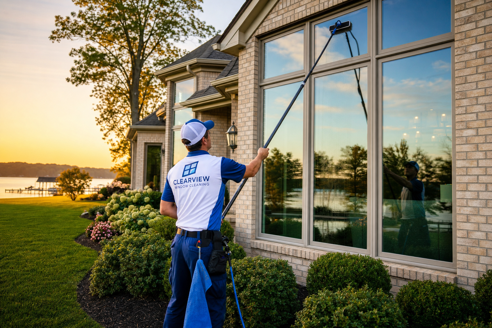
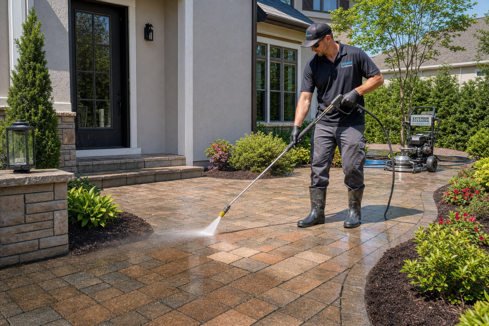
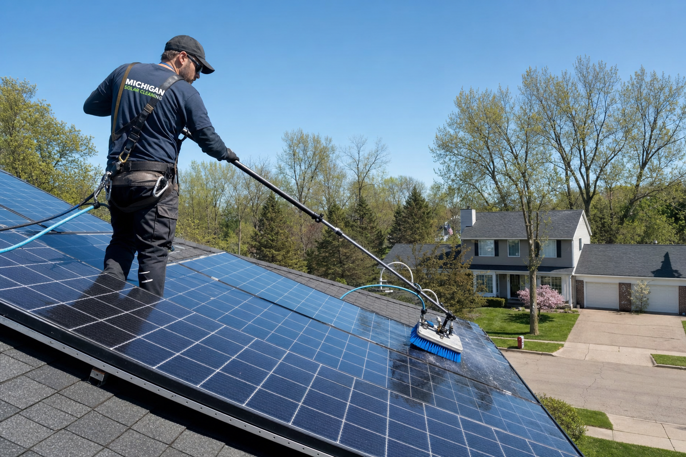

Our Services
Complete exterior cleaning solutions for residential and commercial properties across Jackson County, Michigan.

Traditional & Water-Fed Pole Window Washing
We offer both traditional squeegee hand washing and advanced pure-water fed pole cleaning — a system that uses purified, deionized water to clean and rinse windows without leaving any mineral spots or streaks. The water attracts and bonds to dirt, then dries perfectly clear.
- Residential window cleaning, interior & exterior
- Commercial storefront and office windows
- Water-fed pure water pole system (spot-free results)
- Window screens cleaned and reinstalled
- Tracks, frames, and sills wiped clean
- Single-story to multi-story homes

Soft Wash House Washing
Our soft wash house washing service safely removes mold, mildew, algae, dirt and oxidation from your home's exterior surfaces using low-pressure, chemical-assisted cleaning. Safe for vinyl, wood, stucco, brick, and all siding types.
- Full exterior soft washing
- Vinyl, wood, aluminum, stucco, brick & stone siding
- Fascia, soffits, and gutters
- Mold, algae, mildew and biological stain removal
- Safe low-pressure application — no surface damage
- Pre-treatment for heavy organic growth
High-Pressure Surface Washing
For tougher surfaces that can handle higher pressure, we bring the power needed to blast away years of built-up grime, oil, grease, and staining. Driveways, sidewalks, garage floors, decks — pressure washing delivers dramatic before-and-after results.
- Concrete driveways, sidewalks, and curbs
- Garage floors and aprons
- Deck and fence washing
- Retaining walls and stairways
- Commercial parking lots and loading docks
- Surface sealer prep and post-construction cleaning
Patio, Walkway & Surface Cleaning
We specialize in cleaning a wide range of outdoor surfaces — from natural stone and wood to asphalt and composite materials. Every surface gets the right technique, pressure, and solution to restore it without damage.
- Wood decks and wood composite decking
- Asphalt driveways and pathways
- Cement and concrete flatwork
- Paver stones (brick, tumbled, concrete)
- Fieldstone, flagstone, and natural stone patios
- Retaining walls of any material
- Outdoor steps, fire pit surrounds, pool decks
- Any other walkway, patio, or hardscape surface

Solar Panel Cleaning & Maintenance
Dirty solar panels can lose 15–25% of their efficiency. We use our pure-water fed pole system to safely and thoroughly clean your panels from the ground when possible, removing dust, pollen, bird droppings, and grime — restoring full energy output without risk to your panels.
- Residential rooftop solar panel cleaning
- Pure water rinse — zero chemical residue
- Soft brush heads — no scratching
- Ground-level pole systems for most installations
- Annual and seasonal maintenance programs available
- Restore panels to peak energy efficiency
Foggy Window Service New
When the seal between double-pane window glass fails, moisture gets trapped inside and causes that foggy, cloudy appearance that can't be cleaned from the outside. We offer professional foggy window restoration — a cost-effective alternative to full window replacement.
- Diagnosis of failed insulated glass unit (IGU) seals
- Defogging / defog process to remove internal moisture
- Restores window clarity without full replacement
- Significant cost savings vs. replacing entire windows
- Works on double-pane windows in most homes
- Improve energy efficiency and appearance
Proudly Serving Jackson County
Based in Jackson, MI and serving the entire county. Not sure if we cover your area? Give us a call — we'll let you know right away.
Request Your Free Estimate
No obligation. We'll assess your property and provide a clear, fair price.
(517) 937-2861